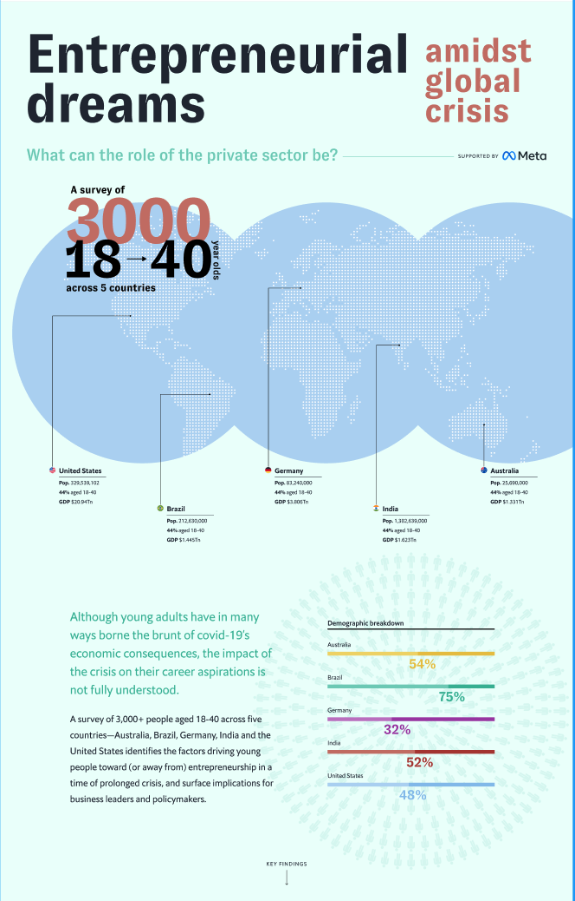

Although young adults have in many ways borne the brunt of covid-19’s economic consequences, the impact of the crisis on their career aspirations is not fully understood.
A survey of 3,000+ people aged 18-40 across five countries—Australia, Brazil, Germany, India and the United States identifies the factors driving young people toward (or away from) entrepreneurship in a time of prolonged crisis, and surface implications for business leaders and policymakers.
Key findings
Key findings#1
The aspiration to own or establish their own business
Overall, while 77% of young adults aspire to own or establish their own business, only 9% currently describe themselves as entrepreneurs.
The private sector can channel this entrepreneurial spirit to promote innovation outside or within their companies.
Key insight
#2
A desire for independence
is an important factor influencing career choices
While the ability to make money remains a top priority, a desire for independence is an important factor influencing career choices among current and aspiring entrepreneurs
Current or aspiring entrepreneurs
Not current or aspiring entrepreneurs
Opportunities for intrapreneurship could effectively channel entrepreneurial spirit in ways that benefit both employees and businesses.
Key insight
#3
Financial constraints are holding aspiring entrepreneurs back
Barriers to entrepreneurship
The most common barrier to entrepreneurship cited by survey respondents was a lack of financial resources.
Businesses should expand and raise awareness of existing financial products and incentives, especially those designed to help women and low income individuals.
Key insight
#4
Entrepreneurs by necessity
Weak job markets are likely elevating ‘necessity entrepreneurship’ among young people in Brazil and India.
Early-stage entrepreneurs who say their motivation to launch a business is to “earn a living.”
Business leaders need to create ways to recognize talented young people who have not earned college degrees, facilitate their entry into the workforce and provide avenues for their professional growth
Key insight
#5
Proactively upskilling online
Young people in these entrepreneurial ecosystems are eager to learn and are exploring alternatives to traditional education.
76%
agree that they had participated in online education or courses to improve their professional skill
The private sector could support the start-up ecosystem through business skill-development efforts.
Key insight
44%35%56%51%60%

What factors are creating a gap between entrepreneurial aspirations and reality?